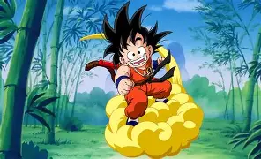
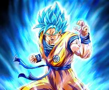
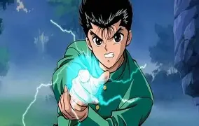
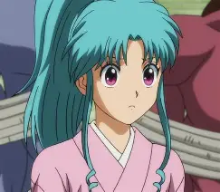
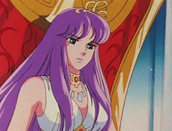
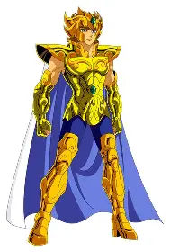
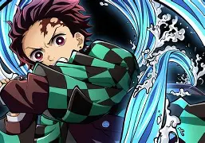
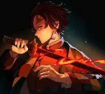

Dragon Ball - Goku criança na nuvem voadora

Goku com a sua transformação de Deus Sayajin

Yusuke e o Leigan

Botan - Guia espiritual

Saori - A reencarnação da Deusa Atena

O lendário cavaleiro de ouro de Leão - Aioria

Tanjiro - Respiração da água

Tanjiro - Respiração do fogo